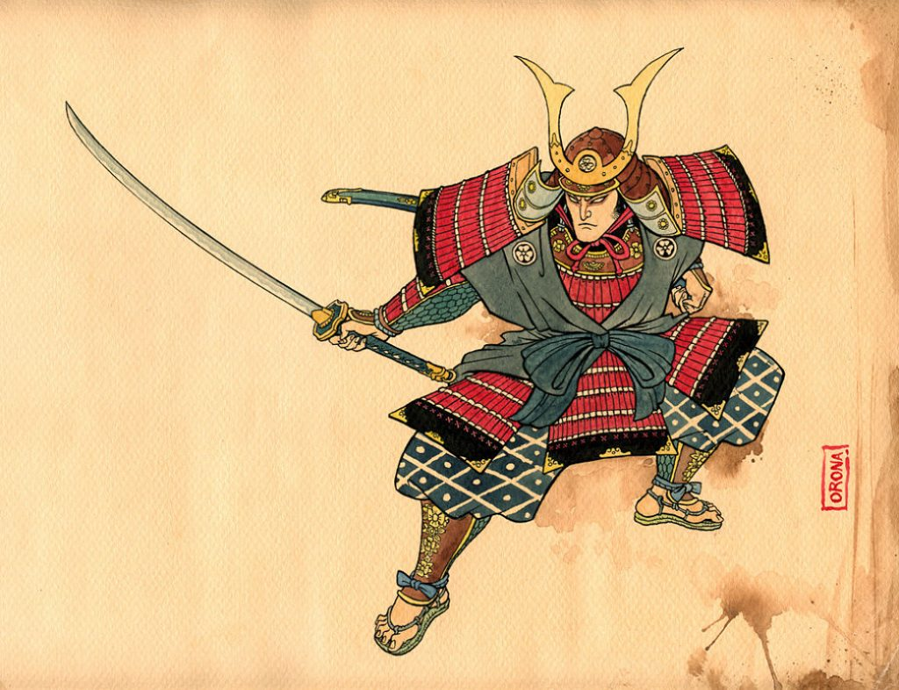

LOS SAMURAI
Samurais surgieron como una clase de guerreros en el Japón feudal y dominaron el país durante casi ocho siglos (siglo VIII al XIX). Ser un samurai era un prestigio social como la clase guerrera de ocupación las posiciones más altas dentro de la dictadura militar nipón, llamado el shogunato o bakufu.
Inicialmente, el papel del samurai era para recaudar impuestos y servir al Imperio. Desde el siglo X, la figura del samurái toma forma y las ganancias de una serie de funciones militares, alcanzando su apogeo en el siglo XVII.
Estilos marciales creadas por los Samurai. hoy se llaman Kobudo (古武道). Fue a través de la práctica de estos estilos que el samurai éxito em perfeccionar sus técnicas, el fortalecimiento de su espíritu y destinado a su mejora, con la auto disciplina y auto control. Pero lo que hizo este guerrero único fue su famoso código del honor y la conducta, el Bushido. Además de la filosofía asimilada por los samurai, el Bushido trajo preceptos para la conducta correcta antes de todas las situaciones.
En 1868, con la Restauración Meiji, la clase samurai fue abolida y se estableció un ejército nacional al estilo occidental. Incluso con estas reformas, el samurai no dejaría morir la tradición. Arte con la espada creada en los tiempos feudales fueron cultivadas y transmitidas de generación en generación hasta nuestros días. Y Bushido sobrevivido en su forma más pura dentro de los dojos en Kobudo.
En la actualidad las artes de los antiguos samurais son practicadas con el objetivo de ayudar a las personas a superar los obstáculos en su día a día y conseguir la paz de la mente, control, disciplina y confianza en sí mismo.
Los Samurais Modernos son, así, personas que aplican la filosofía del Bushidoy la práctica de las artes de la espada hoy, manteniendo viva una tradición de 800 años.
Desarrollo y estatus
El sistema gubernamental de reclutamiento en Japón terminó en el año 792, por lo que en el siguiente periodo Heian (794-1185) se formaron ejércitos privados para proteger los intereses de las tierras (shoen) de los nobles que pasaban la mayor parte de su tiempo fuera de la corte imperial. Este fue el comienzo de los samuráis, un nombre que significa "asistente", mientras que el verbo samurau significa servir, por lo que el término era originalmente de clase y no la profesión militar que más tarde llegó a significar. También había otras clases de guerreros, pero la clase samurái era la única con una connotación de servicio a la corte imperial.
Los samuráis eran contratados por los señores feudales (daimyo) por sus habilidades marciales para defender los territorios del señor contra sus rivales, para luchar contra los enemigos identificados por el gobierno y para luchar contra las tribus hostiles y los bandidos. Por esta razón, los samuráis podían vivir en cuarteles, en un castillo o en sus propias casas privadas. Dado que los samuráis acabaron organizándose en grupos dirigidos por señores de la guerra con poder político, pudieron tomar el relevo de una débil corte imperial en el siglo XII bajo el gobierno de señores de la guerra como Minamoto no Yoritomo. Así, a partir del periodo Kamakura (1185-1333) se fundó un nuevo sistema de gobierno militar dominado por los guerreros y dirigido por un shogun (dictador militar) y así se mantendría hasta el siglo XIX

index